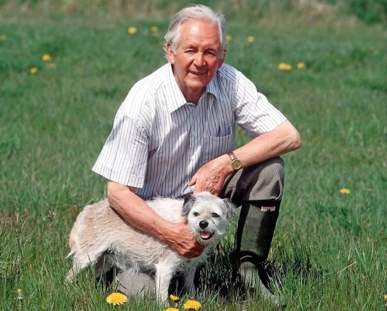
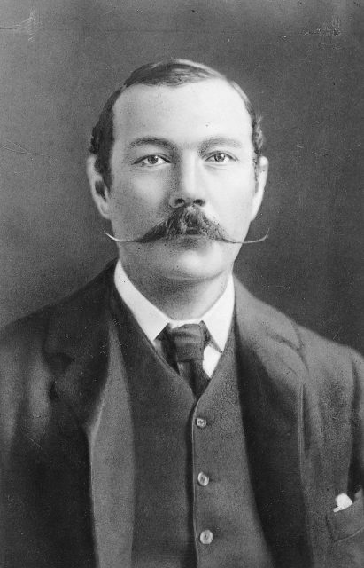
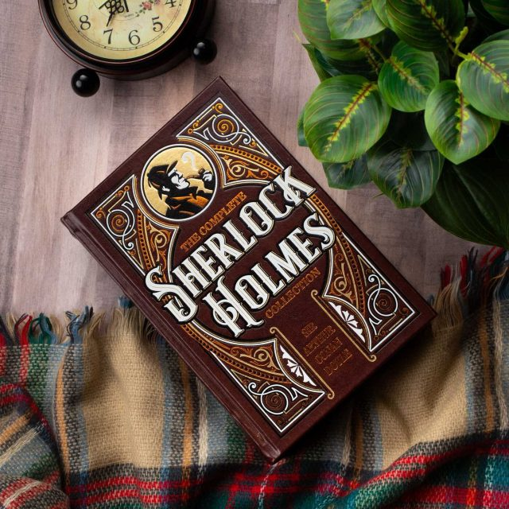
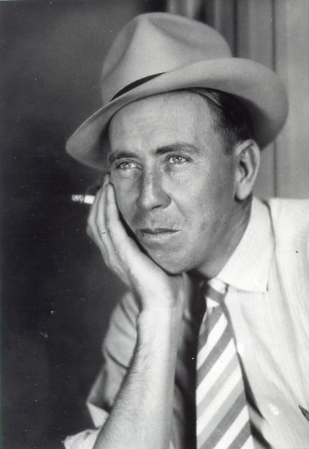
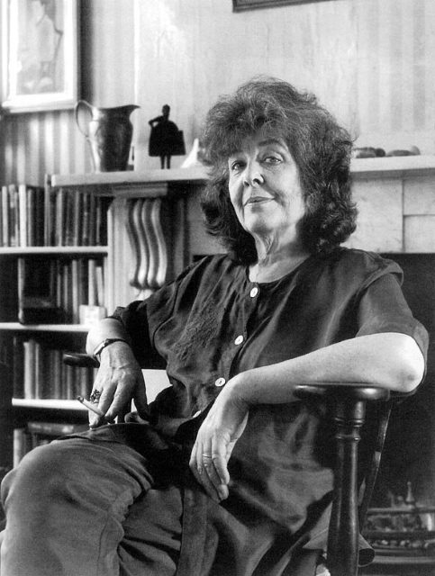
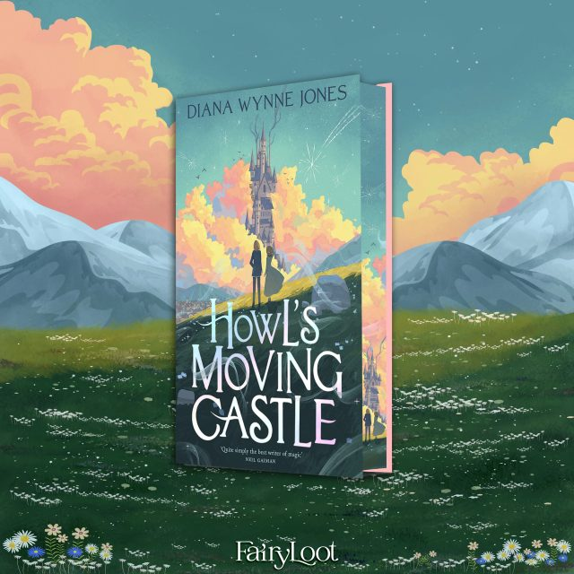
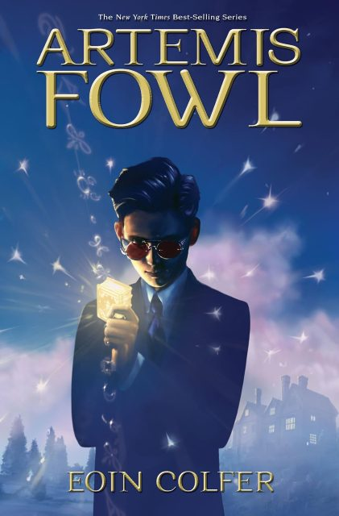
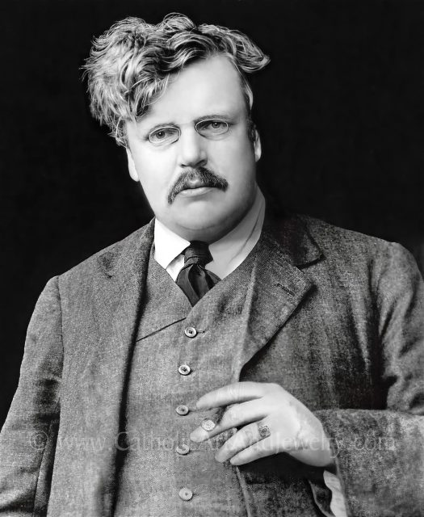
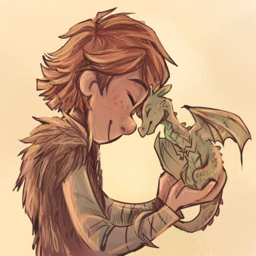

Jeanne Birdsall
As I was preparing to write this month's article about the happenings in my family, I decided to start a new piece of this newsletter—the author of the month page! In this page I will give a brief summary about the author, share with you what book of theirs we read, and either recommend the book or inform you why I would never read it again. I hope this is fun and informative, enjoy!
Jeanne Birdsall is the author of the Penderwick series, Teafelet and Roog, and numerous picture books for kids. She was born in 1951 in Philadelphia. Mrs. Birdsall dreamed of being an author since she was 10 years old but only got around to it in her late forties. Her series the Penderwicks won numerous awards and each of the five books became bestsellers. Her books contain good role models and good moral values, such as truth-telling and honor.
A New Family Favorite!
As you may have guessed by now, my family read the first book in the Penderwick series. First Cailie and my mom read it, then I had to read it because they were both going crazy about how good it was. I really enjoyed the book. The four sisters are very likable, and you can see yourself in at least one of them. I would definitely recommend it as an easy quick read. Even though it is a children's book, it is enjoyable for all ages, and I would recommend it to anyone looking for a fun book to read. If I can't convince you, maybe Cailie can. She rarely reads and when she does, she usually doesn't like the book, but she LOVED this book! I really hope you can take the time to read it!
Jane Austen
Briefly — Her Life and Works
Jane Austen was born on December 16th, 1775, in Hampshire, England. During her life she published four novels: Sense and Sensibility, Pride and Prejudice, Mansfield Park, and Emma. Her books depict life in 19th century middle-class England, breaking new ground by centering her stories around normal people in normal situations. Jane's stories became popular in her lifetime, and are still beloved today as timeless classics.
Why Jane Austen?
This month I chose Jane Austen, partly because I just finished her book Pride and Prejudice and partly because she is one of my favorite authors. I personally have read two of her books (one for school, one for fun) and would love to read the rest!
Highly Recommended!
Jane Austen is an amazing writer in the fact that not only are her stories humorous and gripping, but they are also timeless! The values presented in her books are a good fit for anyone!
James Herriot

His stories have been made into multiple movies and TV series, the most recent being the Masterpiece TV series All Creatures Great and Small, which currently has two seasons and is set to release the third on January 3rd, 2023. His books have traveled far and wide and have become very popular, selling over 60 million copies!
James Herriot, AKA James Alfred Wight
James Herriot was the pen name of James Alfred Wight, who wrote the All Creatures Great and Small book series starting in 1970. His stories are written in an easy-to-read conversational style that is very entertaining, and which has captivated the imaginations of many. I personally laughed or cried often while reading his books. His publications are considered semi-autobiographical because he gathered most of his material from real life experience working as a country vet in Thirsk, England. His characters were real people with whom he interacted, and on the whole they are super heartwarming and fun to read. Each chapter is of a new animal, with a new story. Some of them make you want to laugh so hard you cry, while others will make you cry so hard you start to laugh. I started reading the series in Uganda, Africa, where my travel companions can confirm that I read during most of our car rides. I love this series and I would recommend them to ANYONE, whether they have pets or not, simply for the reason that they make you appreciate life.
J.R.R. Tolkien
His tales of Middle Earth—the land where all his characters live—are powerful and full of beautiful stories of redemption, bravery, and comradeship.
The Hobbit by J.R.R. Tolkien
This month I re-read one of my favorite books of all time, The Hobbit by J.R.R. Tolkien! Although I can say that I only just finished this book about a month ago, when the time came to choose this month's book, I had no problem reading it again—it's just that good! Indeed, I am not the only one who loves this book; it has been critically acclaimed ever since its publication in 1937, and in recent years it has even been made into a trilogy of movies! I highly recommend this book by Mr. Tolkien to anyone — it is a timeless story that will keep the reader entertained at all times!
The Man Behind The Hobbit
John Ronald Reuel Tolkien served in World War I, and it is thought that the war greatly affected his literary works. After WWI, Tolkien joined a literary society called The Inklings, which happened to include another literary giant, then-atheist C.S. Lewis. The two became friends, and Jack (C.S. Lewis) counted Tolkien as one of the many influences that led him to Christianity! Jack was not only a very talented writer, but a lover of languages — he could reportedly speak 8 fluently, and even created his own, which he featured in his stories! One of his most popular books, The Hobbit, originated as stories he told to his children, which he later combined and published as one book.
The Hobbit
The Hobbit's story takes place in the much bigger realm of Middle Earth, where many of Tolkien's other stories intertwine in his complex fantasy world. The Hobbit follows the adventures of Bilbo Baggins, a well-respected hobbit who lives a comfortable and unchanging life. His world is turned on its head one afternoon when Gandalf turns up accompanied by 13 dwarves, who are going on a quest to re-take their ancestral home from the dragon Smaug. Bilbo, despite himself, decides to join the adventure and discovers, as Gandalf says, that "there is a lot more in him than [may be guessed], and a deal more than he has any idea of himself."
This is a story of how a Baggins had an adventure and found himself doing and saying things altogether unexpected. He may have lost the neighbours' respect, but he gained—well, you will see whether he gained anything in the end.
Darlene Deibler Rose
Explanation
This author of the month was actually from last month (December). I received Darlene's book Evidence Not Seen on Christmas morning but didn't read it until last week—thus the lateness of this article. I hope my summary of her amazing work inspires you to read it in full!
"Now faith is the substance of things hoped for, the evidence of things not seen." (Hebrews 11:1)
Evidence Not Seen
Evidence Not Seen is the life account of Darlene Deibler. In her book she remembers her experiences as a missionary before and during World War II. Depicted in her straightforward manner, readers are immersed in her world as a missionary to the islands of Indonesia.
Her story begins on her first wedding anniversary as she steps off a boat onto her new homeland: Batavia Java. The year was 1938. Her story continues with the hard trek into the unreachable depths of the jungle, where she and her husband settle into the community they are living in. Then, the Japanese start invading the nearby islands and the missionaries are forced back to Batavia for their safety by the Dutch government. Through fervent prayer, they all decide that God is telling them to stay on the islands and that they are still needed. All too quickly, the Japanese war machine advances and soon their island is occupied. The rest of her book retells her years in the Japanese prison camps, her separation from her husband, her near execution, and the miraculous things that happen as a result of God's interference and grace.
Her faith is incredibly inspirational to me, and I absolutely LOVED reading her book. It enthralled me completely and I am so grateful to have received it.
Sir Arthur Conan Doyle


The Life and Legacy of Sir Arthur Conan Doyle
Sir Arthur Conan Doyle, born 1859, is most widely known for his mystery books starring Sherlock Holmes and his friend Dr. Watson. Mr. Doyle became a medical student and there got his inspiration for the detail-oriented, calculating detective from his professor, Dr. Joseph Bell. After graduating, Mr. Doyle began writing stories starring his detective Holmes and, because of the public's demand, continued writing them until 1926. Although he is known for his detective stories, Doyle wrote many other fiction and non-fiction books during his lifetime. In 1902, Doyle was knighted for his work in a South African field hospital during the Boer War. He died in 1930, but his literary works are still alive and loved today.
Sherlock Holmes
If you love a good mystery, you've got to love Sherlock Holmes! This week I wanted to try something new, so I picked a book told from the perspective of Dr. Watson, a doctor and good friend of Sherlock's who is writing a memoir of all his friend's cases. This gives a slightly different angle than is usually employed in books and also allows the reader to join along in the adventure with Dr. Watson. Instead of knowing the inner workings and thoughts of Sherlock, you are in the same position as a bystander and discover the answers only when Sherlock reveals them to Dr. Watson. My favorite Sherlock Holmes actor is Robert Downey Jr., with Jude Law as Dr. Watson.
Fun Facts You Might Not Know (And Neither Did I)
- Sir Arthur Conan Doyle used methods in his stories that were later adopted by real police forces in both England and America.
- Doyle was ahead of his time by promoting the use of fingerprint/footprint evidence in his detective novels years before anyone else thought of it.
- The use of dogs to help find culprits in his stories was previously unheard of!
- Doyle talked about typewriter idiosyncrasies (slight differences in the way letters pressed the paper) in his mysteries 30+ years before the FBI began using similar tactics to trace typed documents.
Fred Gipson

This month I chose a book about loyalty, love, and the old west. It used to be one of my least favorite books (you'll understand when you read the summary) but having re-read it again now, as a young adult, I've grown to like it and I can really appreciate it so much more than when I was a child. I hope you enjoy!
—Emilie R.
Who is Fred Gipson?
Fred Gipson was an American author and screenwriter. He was most famous for writing his book Old Yeller in 1956. He wrote other books including Savage Sam, the sequel to Old Yeller, Hound-Dog Man, The Home Place, and many more. His books all had a western theme, which reflected his background of being raised on a farm in Texas hill country. His novel Old Yeller, this month's book, won the Newbery Honor and was later made into a movie by Walt Disney Studios.
Old Yeller
Old Yeller is the story of a 14-year-old boy named Travis and his 5-year-old brother. Travis takes charge right away and soon feels the weight of the family's responsibility upon his shoulders. Shortly afterwards, a ragged yellow retriever shows up at the farm and steals the meat they had hung up to dry. This is the beginning of the relationship with the dog they all come to call "Old Yeller." At first Travis hates Old Yeller for stealing the meat, and hates him even more after Lil Arliss (Travis' 5-year-old brother) adopts the dog and they start getting into trouble together. Things change, however, when one day Lil Arliss is attacked by a mama bear (after having grabbed her cub). When that happens, it is Old Yeller who is able to reach Lil Arliss first and save his life! After this incident, Travis looks at Old Yeller differently and they become very good friends. The remainder of the book shows how important having a good dog is to their life on the farm, and Travis realizes he would have been lost without Old Yeller.
Unfortunately, this book has a partially tragic ending. Soon after the bear attack, and before Old Yeller is fully healed from his wound, a rabid wolf attacks Lil Arliss and Travis' mother. Luckily for them, Old Yeller was nearby and was able to slow the wolf down before it could bite them. Old Yeller slows the wolf down enough for Travis to grab his gun and shoot it, but in the process Old Yeller is badly wounded. Because of this, Travis has no choice but to shoot Old Yeller too.
As a child this book made me cry, because after all Old Yeller did for the family, I didn't understand why he had to die! However, now that I am older, I understand the dangers of rabies and why it was necessary for many families in the old west to shoot pets, farm animals, and even, in rare cases, other humans, to stop the spread of this terrible disease. After all this tragedy, it is lucky that there is a bit of silver lining at the very end of the book: earlier on, the neighbor girl had told Travis that her dog was going to have babies and that Old Yeller was their papa. Later, she gives Travis the best of the litter. At the very end, Travis sees the pup they've named Savage Sam acting just like his papa (being a scoundrel and getting into trouble). Instead of getting mad like he used to with Old Yeller, this behavior makes Travis happy and gives the reader hope for the future. In the sequel, we learn that Savage Sam has the same loyalty as Old Yeller, and saves the boys from just as many dangers.
Lynn Austin
Who is Lynn Austin?
Lynn Austin was born in 1949 and began her writing career while raising her three young children and working part-time. Since then, she has written an astounding 32 books, the newest of which was published in 2022 and is the topic of this week's book review! Lynn Austin loves to write about real people and always has God as the center of her works, saying, "I'd like to think that the women in my stories find strength by trusting in God." Lynn has also won eight Christy Awards, setting a new record!
Summary
The Long Way Home takes place during and shortly after World War Two, revolving around two girls living in completely different circumstances. The first, Penny, lives in America shortly after the war has ended. Her at-home life is complex, and she spends most of her time at her neighbor's home, working in their veterinary clinic. As the war ends, Penny's neighbor Tom returns home changed, and Penny is horrified that her best friend would have changed so much in such a short time; she endeavors to learn why Tom would have lost his faith in God and become depressed. In her search for answers, she contacts Tom's military buddies and discovers the picture of a young lady in Tom's bags. On the back is written the word Giselda. On the other side of the world and a few years earlier, the young woman Giselda is running for her life. As a Jew living in Germany, Giselda and her family have faced persecution and decide to leave, ending up in Belgium, where Giselda studies to become a nurse. After Germany takes over Belgium, Giselda is sent to a concentration camp, and at the end of the war it is Tom who is able to rescue her as she lies on the brink of death. They become friends, and it is with his help that she arrives in America at the end of the war. The story ends on a happy note, with Penny finding Giselda and them working together to get Tom back to normal.
I loved this book since it contains everything I love in a book! It is faith-based, has characters that are relatable, and is a historically based novel, which for me is a plus! The novel is complex, as the story winds in unexpected ways, and for me the end was a delightful surprise! It also accurately describes the trials of those with PTSD who came home from World War Two — a time when the only "cures" available were brain-shocking therapy, lobotomies, and other now seemingly primitive treatments. Many who had gone to war as believers returned shell-shocked and devoid of faith in a loving God. This story combines all of that, plus a little romance, and delivers it in a can't-put-it-down format! I recommend it to anyone and everyone looking for a fascinating new read!
Eric Blehm
Who is Eric Blehm?
Eric Blehm is a non-fiction writer who specializes in biographies—mostly about unrecognized war heroes. As a young journalist he was the first to successfully accompany and keep pace with an elite Army Ranger unit on a training mission, and it was there that he learned about the previously untold story of a group of 11 Green Berets who operated in Afghanistan just weeks after 9/11. That's where his writing career began. From there he wrote several more books, including this month's pick, "The Last Season" — currently the only book of his that isn't about someone in the armed forces. Eric chose to write it because he was personally connected with those who knew Randy, and, like Randy, had an affinity for nature; both compelled him to tell the story of the ranger's life.
The Last Season
Before I get into describing the book, I want to clear up a couple of things. Firstly, I don't necessarily recommend this book to everyone. It is the story of a real person—faults and all—and it's revealed about halfway through that Randy was unfaithful to his wife. Randy is also what I guess you could call a tree hugger—he loved nature more than people, and although he kept his Ranger oaths to protect "people from nature" and "people from people," his true life's passion was protecting "nature from people." That's not to say it wasn't a riveting story, or that I don't admire Randy's passion for the wild—I'm just clarifying that it is not a redemptive story in any way (for Randy, nature was his "god"). As I told my mom, it's not the author that I have problems with—it's the subject matter. But now that I've gotten that out of the way (and if you don't mind me spoiling the ending) let's get to the book itself.
"The Last Season" is about the High Sierra backcountry Ranger Randy Morgenson, who was legendary for finding people missing in the High Sierra—until one day when he went missing himself. The riveting story begins as Randy's fellow rangers realize he hasn't been in contact with anyone for 3 days, an unusually long silence for Randy. But in those days, radio was the only way to communicate in the backcountry, and it was often unreliable, so they don't think much of it, and a nearby ranger is sent to check on him. A couple days later, Randy is officially declared missing, and a full-on Search and Rescue is undergone: 98 personnel, 48 ground crews, 4 helicopters, and 8 dog crews, covering over 80 square miles of untamed and often dangerous wilderness over 8 days. Not a trace of him is found.
Five years later, some backpackers found a weathered backpack near a lake, then a pair of shorts, then a boot with a perfectly preserved skeletal foot inside. They called it in, and a second search began—this time for Randy's bones. By its end, the bones were confirmed to be his, and the only mystery left was how he died, one that has never been solved. The author recounts all the theories—suicide, alien abduction, accidental death. The one that sounded most likely to me: Randy stepped on snow he thought was stable, fell through the ice into a pond, and was pulled away from the hole by the current, which would explain why five years of snowfall covered any trace before it could be found.
Final Thoughts
Although it has a slightly morbid ending, the book overall was good! The author does a masterful job of alternating chapters between the search for Randy and the story of his life. After reading a book like this (especially while in the mountains of Colorado) you really gain an appreciation for those committed to protecting our natural lands.
One thing I think is amazing: in the author's note, Eric mentions he actually had the chance to meet Randy Morgenson in person! He'd been backpacking through Sequoia and Kings Canyon and a friend of Randy's recommended he stop by, since Randy's knowledge of nature was equal to John Muir's—but when Eric arrived, there was a note on the door that read, "On patrol, back this evening," and being in a hurry, he decided to keep moving.
Katie Davis Majors
Who is Katie Davis Majors?
Katie Davis is a missionary who has worked in Uganda for 16+ years! She began her ministry, Amazima, in 2007 when she was just 19. Since then, she and her ministry have made a massive impact on Uganda and gained global recognition. Katie has written two books about her life and ministry: Kisses from Katie and Daring to Hope. The book I read this month was Kisses from Katie, and although it was a short read it was PACKED with inspiration! The fact that she was just 19—my age now—when she began her ministry and adopted 13 Ugandan girls was really impactful to me. Her devotion to the poorest of people and her willingness to follow God's will are traits I want to embody. Because she relied so much on God for daily sustenance, Katie was able to pour out the love she felt from God to the people around her. I am not embarrassed to say I am jealous of that. "I WANT THAT" was what I thought over and over as I read her story.
Kisses from Katie begins with Katie telling the reader she never expected to live the life she now leads. As she says, "I was the class president, homecoming queen, and top of my class. I dated cute boys and wore cute shoes and drove a cute sports car. I had wonderful, supportive parents who so desired my success that they would have paid for me to go to college anywhere... But I loved Jesus. And the fact that I loved Jesus was beginning to interfere with the plans I once had for my life and certainly with the plans others had for me. My heart had been apprehended by a greater love, a love that compelled me to live differently." That could basically be the summary of the book. Her love for God led her to volunteer with her mom at a Ugandan orphanage for three weeks; afterward she felt she needed to go back, so she convinced her parents to let her spend a gap year there as a preschool teacher. During that year she began Amazima and started adopting girls with no family. By year's end she was in love with Uganda — the people, the children — and felt God wanted her to stay for good, realizing "it is not about God making my dreams come true, but about God changing my dreams into His dreams for my life."
She began getting kids sponsored for school and healthcare, growing from 40 kids to almost 400 in a couple of years, and started feeding programs that grew to serve over 1,200 children. By the end of the book, Katie had adopted the 13 girls she still has today, and the ministry had grown more than she could have hoped — and it's only grown since the book's 2011 publication. In 2015 she married fellow missionary Benji Davis, and they've since had two boys of their own, making 15 children in all.
I really loved reading Kisses from Katie, and loved learning what's happened in her ministry since! Her story is another example of what can happen when you follow God's plan for your life — and I've heard over and over that His plan is so much better than our own.
"I am watching God work, and as I 'delight myself in the Lord' by doing what He asks of me and by saying yes to the needs He places in front of me, he is changing the desires of my heart and aligning them with the desires of His. As I go with Him to the hard places, He changes them into the most joyful places I could imagine." —Katie Davis Majors
Diana Wynne Jones


Who Was Diana Wynne Jones?
Diana Wynne Jones is my latest author of the month, although in truth she should have been my author of the month for the past 4 or 5 months, since I have been listening and re-listening to her series Howl's Moving Castle practically nonstop. Mrs. Jones was born in England in 1934 and died in 2011. She is known as a master novelist, poet, academic, literary critic, and short story writer. She wrote over 40 books during her career and won multiple awards for her work.
Why Diana Wynne Jones?
Although I have since learned that Mrs. Jones is a well-known fiction author, I initially discovered her work by watching a Studio Ghibli movie! My siblings and I have spent the last few months watching all of the Studio Ghibli films, one of which was Howl's Moving Castle. It was so charming and laugh-out-loud funny that when I discovered it was based on a book, I decided to read it. Now, having watched the movie and listened to the book series twice all the way through, I can say for certain the books are WAY better — but I am still grateful to the movie for introducing me to one of my new favorite authors.
Howl's Moving Castle
Howl's Moving Castle is written from the perspective of a young woman named Sofie (18 years old). Sofie and her sisters and mother run a hat shop in a little town called Market Chipping. At the start of the book, Sofie's father has just died, and her mother realizes it will be difficult to take care of all three girls alone. Fanny (Sofie's mother) sends the younger two off to good apprenticeships while keeping Sofie at the hat shop. Sofie feels stuck and wishes for something more. During a town holiday she goes to see how her sister is doing and, on the way, bumps into a young man who tries to ask her out for a drink. She's so frightened he apologizes and lets her go. Back at the hat shop, Sofie has an encounter with a nasty customer who turns out to be the evil Witch of the Waste. The witch puts a spell on Sofie that turns her into an old woman and prevents her from telling anyone she's under a spell. Not knowing what else to do, Sofie leaves her hometown and hikes into the surrounding hills, where she runs into Howl's moving castle.
In Sofie's town, the wizard Howl has a bad reputation and is thought of as evil. Sofie, feeling she has nothing to lose, yells at the castle to stop — and it does. Inside she meets Michael, Howl's apprentice, and Calcifer, Howl's fire demon. She tells them she needs a wizard's help, and they let her stay the night since Howl is out. Calcifer tells Sofie he's bound in a contract with Howl, and if she can break it, he'll lift her spell. She agrees, even knowing it means staying in the moving castle a while. In the morning, Howl arrives home, and Sofie is surprised to see he's the young man who asked her out. He doesn't recognize her as an old woman, and asks why she's there; Sofie tells him she's his new cleaning lady, hired by Calcifer.
The rest of the story details how Sofie gets to know Howl and discovers he's not evil at all—only slightly vain and cowardly. Howl discovers Sofie's true identity, and in the end she's able to break the contract between him and Calcifer, saving them both. Sofie and Howl end up getting married, and their story continues in the two remaining books in the series. I personally loved Howl's Moving Castle — witty, engaging, and imaginative. And although it was originally meant for children and teens, my mom listened to it too, and loved it! I definitely recommend it to anyone looking for a new, fun read!
Eoin Colfer

Who is Eoin Colfer?
Eoin Colfer is a children's and teen fiction writer who has won a lot of acclaim for his award-winning series Artemis Fowl. He was born in Ireland and grew up to be a primary school teacher before becoming a full-time author. The first Artemis Fowl book has sold over 25 million copies, been made into a Disney movie, and was voted the public's favorite Puffin Modern Classic of all time — so it may be no surprise that it's this month's pick.
Artemis Fowl
The Artemis Fowl series follows a boy genius named Artemis Fowl II. He's 12 in the first book and the only heir to his father's criminal empire. When his father goes missing on a business trip and his mother goes mad with grief, it's up to Artemis to save the family's fortune by any means he's able. His search leads him to discover fairies living beneath the earth's surface — ultra-sophisticated fairies with a ransom fund. With his bodyguard Butler, Artemis captures a fairy named Holly and finds himself in a very risky hostage negotiation with beings who'd rather mind-wipe him than hand over gold. In the end, Artemis wins, keeps his memory, and Holly is returned to her people — and he learns a little humanity along the way. Across the following books he grows up, makes friends among the fairies, and goes from a heartless machine of a boy to being almost friendly, all with the natural wit that keeps these books thoroughly entertaining.
I would recommend these books to any young-to-older teens who love fantasy fiction!
The Fowl Twins
It's been a while since I wrote this article, and I thought I'd add a brief note about the Fowl Twins trilogy, written by the same author, which follows Artemis' twin younger brothers, Beckett and Miles, as they follow in his footsteps and have adventures with fairies. Honestly, I'd known about it for a couple of years but avoided it like the plague — I generally dislike sequels to books I already think are pretty perfect — but in 2024, with a goal of reading 60 books, I finally jumped in.
The Fowl Twins is written with the same humor, creativity, and can't-put-it-down action as the original series. Miles and Beckett have a great connection with each other and their older brother, making family ties one of the strong themes throughout. Although Artemis himself never appears — having rocketed himself into space for a few years — his brothers constantly reference things he taught them, giving more insight into his personality than even the first series did. I don't know why I waited this long to read these; the original series is still first place in my mind, but the sequel trilogy comes a close second.
G.K. Chesterton

Who Was G.K. Chesterton?
G.K. Chesterton was a major literary figure in the early 20th century; during his lifetime he wrote around 4,000 essays (mostly in newspaper columns), some 200 short stories, 80 books, several hundred poems, and several plays. He's most famous for his Father Brown mysteries, short stories compiled into five collections. On audiobook, the complete collection runs 41 hours and 28 minutes — which is what I've been listening to for the last week or so, and they're so good I had to share them here!
The Father Brown Mysteries
The Father Brown mysteries focus on a Roman Catholic priest named Father Brown — short, often described as childlike and simplistic, who carries an umbrella wherever he goes. Strangers see him as helpless, vague, and foolish; those who know him know he's quick-witted, intelligent, brave, and a master of human psychology.
The best way to show his character is with the very first story: London's greatest detective is tracking a criminal called Flambeau, wanted for a string of flamboyant robberies. On a train into London, the investigator notices a seemingly helpless priest telling everyone about the special package he's carrying, gives him some advice about announcing it so loudly, then disembarks. Wandering London for any sign of Flambeau, he stumbles onto the trail of two Catholic priests leaving a wake of oddities—splashed soup, dumped apples, broken windows, forgotten packages—and follows it, with two constables, to a secluded hill. There he discovers one priest is Father Brown, and the other is Flambeau in disguise, trying to steal the package. On the hilltop, Father Brown reveals he'd suspected Flambeau from the start, had already mailed the important package to a friend from the post office, and had even led the detective and constables there himself by leaving an obvious trail. Beaten, Flambeau bows and admits he's met his intellectual match. In later stories, Flambeau is beaten twice more before becoming a "good guy" and joining Father Brown as a friend on some of his other adventures.
Apparently there are also a couple of Father Brown series on various platforms — now I want to watch them! Obviously there are MANY of these short stories (41 hours worth), each with elements of humor, as in one memorable instance when Father Brown says, "Ohhh, what a turnup I am!", plus fascinating characters and mysteries. I'm about halfway through the audiobook, with 29 more hours to go, but each story is so unique and engrossing that I'll probably finish before the end of the week!
I would recommend these short stories to anyone! Although altogether they total 41 hours, individually they take only about 20 minutes to read — short enough that even people who don't normally read could get through one.
Cressida Cowell

Bonus: How To Train Your Dragon is the first of twelve "self-help" books in the series, written by the hero Hiccup Horrendous Haddock the 3rd and "translated" by Cowell. In his books, Hiccup tries to help other young people learning to become a hero "the hard way," like he had to.
Who is Cressida Cowell?
Cressida Cowell is a British author best known for her How to Train Your Dragon series. She was born in London but spent much of her childhood away from the city.
"I spent a great deal of time as a child on a tiny, uninhabited island off the west coast of Scotland... By the time I was eight, my family had built a small stone house on the island, and with the boat, we could nearly fish for enough food to feed the family for the whole summer... From then on, every year we spent four weeks of the summer and two weeks of the spring on the island. The house was lit by candlelight, and there was no telephone or television, so I spent a lot of time drawing and writing stories."
With a childhood like that, I'm not surprised she grew up to be an author! Her books contain unassuming characters who have to work at becoming heroes, like Hiccup Horrendous Haddock the 3rd, heir to the Hairy Hooligan Tribe.
How to Train Your Dragon
How To Train Your Dragon introduces Hiccup, the shrimpy heir to the Viking tribe called the Hairy Hooligans. He and his friend Fishlegs are small and bullied a lot, especially by Hiccup's cousin Snotlout, who hopes to take over the tribe one day. As the story begins, Hiccup and the other young boys are sent to the dragon nesting cliff to grab their very first dragon — the rite of passage for every young Viking; to fail means banishment. Hiccup grabs the first dragon he sees, a common Welsh, and stows it in his backpack. But before any of the boys can sneak away, Fishlegs (who is allergic to reptiles) sneezes and wakes every sleeping dragon! As they flee, Fishlegs admits he never got one, so Hiccup gives him the dragon he'd caught and runs back in for another. Everyone escapes safely, but back at the village, Hiccup is dismayed to find the second dragon he grabbed is tiny and has no teeth. Embarrassed, he makes the best of it — and earns the nickname "Hiccup the Useless," and his dragon, "Toothless."
Unfortunately for Hiccup, Toothless isn't just tiny and toothless, but stubborn, selfish, and disobedient. In Hiccup's village, the only known way to train a dragon is by yelling at it, but Hiccup isn't a good yeller, so he has to find another way — trying gratitude, fear, greed, vanity, and finally jokes and riddling talk, which seem to work. (Hiccup can also talk in dragonese — he's the only one in his village who knows the language, since most people think it's for nerds.) A few weeks later, all the young Vikings show off their dragons' obedience at a tournament, where Toothless makes sassy remarks and starts a chaotic battle between all the dragons. Every young Viking is sentenced to banishment the next morning — until three mountain-sized sea dragons show up overnight, and the boys are promised un-banishment if they can make the dragons go away. It's here that Hiccup shows his hidden talent as a leader and thinker, figuring out a way to make the giant dragons fight and kill each other, leaving the island safe. Hiccup and his fellow initiates are thanked heartily by their tribe, and the story ends on a happy note.
I would recommend the movie to ANYONE — maybe I'm a little biased because I love it so much, but I think it's one of the best DreamWorks films. The books, on the other hand, are great for younger readers (8–18): quick, easy reads that capture the imagination of younger people rather than adults.
How To Train Your Dragon (The Animated Movie)
Truthfully, I watched the How to Train Your Dragon movie LONG before I ever read the books. I absolutely LOVE it — it's my favorite animated movie, and I have parts of it memorized from watching it so much! I LOVE Toothless, even though he looks and acts nothing like the Toothless in the books. In fact, other than the names and a couple of other facts, the movie and books are so different I think of them as two different things. But the one thing that stays the same in both is Hiccup — still the unlikely, scrawny boy who becomes a hero the hard way, which is exactly what makes him so relatable. Unlike protagonists who are perfectly molded into their role, Hiccup has to fight hard for it. He's doubted in everything he does, by everyone he knows — yet he fights through it, and finds his best friend, Toothless, along the way.
How To Train Your Dragon (A Note on the Live Action Movie, 2025)
I watched this movie over the summer and was pleasantly surprised! They copied the animated version almost word for word, and the visual effects were stunning. They also brought back the beloved soundtrack by John Powell, which made it really feel like a How To Train Your Dragon movie. Almost every scene from the original was included, and the casting for Hiccup was perfect. Live-action Toothless looked both cute and terrifying at once, and still acted like a big puppy — a great achievement, in my opinion. Overall it was a great movie; my only qualm is that they race-swapped Astrid and invented a backstory to explain it, instead of keeping her the fair-haired Nordic Viking she was originally written as.
"There were dragons when I was a boy. There were great, grim, sky dragons that nested on the cliff tops like gigantic scary birds. Little, brown, scuttly dragons that hunted down the mice and rats in well-organized packs. Preposterously huge sea dragons that were twenty times as big as the big blue whale and who killed for the fun of it. You will have to take my word for it… the dragons that would be my evidence have crawled back into the sea where men cannot follow—but the thing about dragons, and I am a person who knows about dragons, is that it could be that they are merely sleeping down there. There may yet come a time when heroes are needed once more."